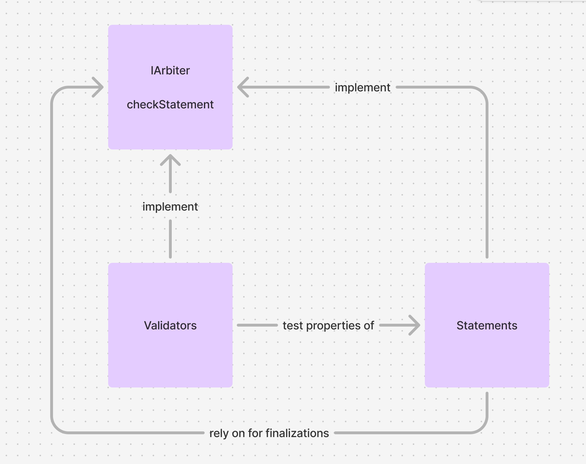

For Exchange
We take the peer-to-peer agreement as the basic unit of exchange, where party A agrees to X in exchange for party B's Y. We call X and Y statements and represent them by EAS attestations - usually produced by resolver contracts - which could represent an on-chain token payment, another on-chain action, a direct reference to an off-chain action (e.g. some data's URI), an oracle's guarantee of an off-chain action, or anything else.
Statements can be tested by reusable and modular validators, which produce validation attestations that deal parties can use in smart contracts to trustlessly finalize on-chain actions (e.g. payment) if and only if the counterparty fulfills their part of the agreement.

Statements
Statements represent the fulfillment of a party's obligation in an agreement.
For example, the sample [[ERC20PaymentStatement]] is an EAS resolver contract with a function
struct StatementData {
address token;
uint256 amount;
address arbiter;
bytes demand;
}
...
makeStatement(StatementData calldata data, uint64 expirationTime, bytes32 refUID)
requiring the attester to deposit an amount of an ERC20 token, and producing an attestation stating they've done so. It has another function collectPayment(bytes32 _payment, bytes32 _fulfillment), which the counterparty can call to collect the payment, passing in an attestation from the specified arbiter address, which could be a statement, validator, or even a user address. In practice, the contract should be extended so that the payment maker can specify in the statement what they're demanding from the counterparty, and check within collectPayment whether it was actually fulfilled.
Statements can directly reference other statement attestations and interact with other statement contracts, sometimes enabling complete negotiation flows even without dedicated agreement contracts or validators.
Validations
Validations represent properties of statements which are difficult to determine or cannot be determined via their raw data, and are often produced by third parties. They can be used for conditional finalization of terms in agreements.
For example, the sample [[OptimisticStringValidator]] for [[StringResultStatement]] statements has a function
struct ValidationData {
string query;
uint64 mediationPeriod;
}
...
startValidation(bytes32 resultUID, ValidationData calldata validationData)
which produces an attestation referencing the specified statement after a certain amount of time unless the counterparty calls mediate(bytes32 validationUID). If the counterparty requests mediation, a trusted oracle retries the job and produces the requested attestation only if it gets the same result as specified in the original statement.
If specified as the arbiter in an [[ERC20PaymentStatement]], the attestation from [[OptimisticStringValidator]] can be passed into collectPayment to claim payment for agreements. In this case, collectPayment should be extended to check if each validation's underlying [[StringResultStatement]] actually fulfills the specified payment via the job and counterparty fields of the statement's attestation schema.
Agreements
How does the buy-side in our example so far know when it should request mediation? It could listen to events from the [[OptimisticStringValidator]] it specified, filtering by those referring to statements it made, and requesting mediation on unsatisfactory results. Indeed, in many cases, Agreements can be an informal concept enacted through interactions with other contracts.
However, more complex negotiations may sometimes require dedicated contracts to manage the relationship between statements and validations. One use for agreement contracts is as a component of multi-step processes consisting of several atomic agreement steps.